Fatih Altunbaþ, Fatih Alkan, Mustafa Ay
Tez Danýþmaný: Doç. Dr. Recep Yenitepe
Marmara Üniv. TEF Makine Eðitimi Böl.
Ýstanbul 2011
Not: Tezin tamamýný pdf formatýnda indirmek için týklayýnýz (7MB) |
ÖNSÖZ
Geliþen teknoloji ile kullanýmý daha da yaygýnlaþan plastiklerin, yine günümüzde en yaygýn üretim yöntemi olan enjeksiyon kalýp yöntemi ile üretilmektedir. Bu tez çalýþmamýzda Enjeksiyon kalýplarýný etraflýca ele aldýk. Kalýp elemanlarýný tanýdýk. Kalýp tasarým ilkelerini anlatmaya çalýþtýk ve kalýp üretimi gerçekleþtirdik.
Kalýp Uygulamasýnýn tüm aþamasýnda, kalýp elemanlarýnýn üretiminde kendi el emeðimiz olan bu çalýþmamýzýn CNC iþlerinde bize destek olan AKADEMÝ KALIP Genel Müdürü Sn. Murat CIVRAZ’a üretim safhalarýnda bilgi ve tecrübelerini bizden esirgemeyen ve gerekli araç ve gereci bize temin eden ASET PLASTÝK Kalýphane sorumlusu Sn Mustafa DEMÝR’e, tez danýþmanýmýz Sn Doç Dr. Recep YENÝTEPE’ye sonsuz teþekkürlerimizi sunar bu çalýþmamýzýn konu ile ilgilenen herkesin yararýna olmasýný temenni ederiz.
ÖZET
Her geçen gün geliþen teknoloji ve yazýlýmlar yardýmýyla hýzlý, güvenilir ve kaliteli üretim yapmak baþarýlý olmak adýna önemlidir. En yaygýn üretim þekli olan plastik enjeksiyon yöntemi için de bu geçerlidir. Hýz ve kaliteyi yakalamak için kontrolden tasarýma, tasarýmdan üretime, üretimden analize her aþamada bilgisayar kullanýlarak üretim süresi ve maliyeti minimuma indirgenebilinir. Ayrýca plastik enjeksiyon kalýplarý ve çeþitleri tanýtýlmýþ; bu kalýplarýn yolluk sistemleri, soðutma sistemleri, itici sistemleri, Kýsacasý plastik enjeksiyon metoduyla üretim konusunda teorik bilgiler verilmiþtir. Daha sonra bu teorik bilgiler desteðiyle örnek bir ürünün kalýbý üç boyutlu program kullanýlarak tasarlanmýþtýr. Yapýlan tasarýmýn önce akýþ analizi yapýlmýþ ve muhtemel karþýlaþýlacak sorunlar tespit edilmiþtir. Bu sorunlara çözümler üretilip gerekli düzeltmeler yapýldýktan sonra kalýbýn yapýsal analizi incelenmiþ ve kalýbýn maruz kaldýðý yükler karþýsýnda nasýl davranacaðý ve ne derece güvenilir olduðu kontrol edilmiþtir. Son olarak ta bu tespitler doðrultusunda gerekli önlemler alýnarak üretilen kalýptan elde edilen sonuçlar irdelenmiþtir.
KISALTMA LÝSTESÝ
PA Poliamid
PA6 Poliamid 6
PC Policarbonat
PE Polietilen
PET Polietilen Terephalat
PMMA Polimetilmetakrilat
POM Polioksimetilen
PP Polipropilen |
PS Polistiren
PSU Polysulfon
PTFE Politetrafloretilen
PVC Ploivinilklorür
P-V-T Basýnç-Hacim-Sýcaklýk
SAN Stirol Akril Nitril
TS Türk Standartlarý
UV Ultraviyole |
- GÝRÝÞ VE AMAÇ
Plastikler günümüzde, hayatýmýzýn her alanýna girmiþ bulunmakta ve giderek kullaným alaný artmaktadýr. Hiç þüphesiz üretilebilirlik, hammaddeye kolay eriþim, seri üretime yatkýnlýk gibi özellikler plastiðin bu denli yaygýnlaþmasýnda önemli rol oynamaktadýr. Ev eþyalarýndan otomotive, gýda sanayinden savunma sanayine, birçok alanda plastikler kullanýlmaktadýr. Plastiklerin bu kadar geniþ kullaným alanýn olmasý, plastiklerin çok sayýda çeþidinin olduðunun göstergesidir. Günümüzde 400 den fazla plastik çeþidi vardýr ve bu sayý yapay müdahalelerle giderek artmaktadýr.
Plastik çok çeþitli yöntemlerle þekillendirilerek kullanýma hazýr hale getirilmektedir. Bunlardan en yaygýn kullanýlaný iste enjeksiyon kalýpçýlýðý yöntemidir. Bu yöntemde prensip olarak, olmasýný istediðimiz þekilde metal bloklara açýlan boþluklara ergimiþ plastiðin doldurulmasý esasýna dayanýr.
Eskiden kalýpçýlýk uðraþ ve emek isteyen bir iþti, bu nedenle ülkemizde yeteri kadar geliþememiþtir. Bu iþle uðraþan kiþilerin eðitim seviyesinin düþüklüðü, bu konuda araþtýrmalarýn kýsýtlý olmasý, kalýpçýlýðýn geliþmesine engel olmuþtur. Yapýlan çalýþmalar yapboz (deneme/yanýlma) yöntemi ile ustalarýn tecrübelerine kalmýþtýr. Kalýpçýlýk çok geniþ bir alana yayýlmýþ araþtýrýlmasý gereken bir uzmanlýk alanýdýr. Bu nedenle kalýpçýlýk konusunu ele almayý uygun gördük
Bu çalýþmamýzda enjeksiyon kalýplarýnýn kýsýmlarý, bu kýsýmlarýn iþlevleri ve çeþitleri, enjeksiyon kalýbýnýn tasarýmý, tasarýmda dikkat edilmesi gerekenler incelenmiþtir. Ayrýca enjeksiyon kalýplarýnda kullanýlan plastik türlerine deðinilmeye çalýþýlmýþtýr.
HACÝM KALIPLARI (ENJEKSÝYON KALIPLARI)
2.1 Taným
Kalýplanacak parça boyutlarýna ve þekline uygun boþluðu bulunan ve ergitilmiþ plastiðini enjeksiyon metoduyla boþluða doldurulmasýný ve soðutularak þekil almasýný saðlayan sistemdir.Þekil1.1’de enjeksiyon kalýplarýndan örnekler verilmiþ, þekil 1,2’de ise bu kalýplarla üretim yapan enjeksiyon makinesi gösterilmiþtir.
Enjeksiyon makinesi, ergitilmiþ plastiði kalýbýn içine enjekte eder ve kalýp içine açýlan boþluðun içinde soðuyup þekil alýncaya kadar bekletilmesini saðlar. Plastiklerin kalýplanmasýnda hazne içinde plastik hammadde rezistanslar vasýtasýyla ýsýyla ergitilir ve kalýp içine açýlan boþluða enjekte edilir. Kalýba enjekte edilen ergitilmiþ plastiðin soðutulmasý ise kalýp içine açýlan su kanallarý ile olur. Bu kanallarda çoðunlukla su kullanýlýr. Ancak bazý durumlarda baþka sývýlar da (yað vb.) kullanýlabilir. Bir enjeksiyon makinesinin en önemli elemanlarýndan biri kalýptýr. Enjeksiyon iþlemi kalýba yapýlýr. Enjeksiyon makinesiyle bir ürün imal etmek için ürünün yapýsýna uygun bir kalýbýn kullanýlmasý þarttýr.
2.2 Kalýbýn Fonksiyonu
- Ýçine enjekte edilen ergitilmiþ plastiði soðuyup sertleþene kadar muhafaza etme.
- Ergitilmiþ malzemeye son þeklini vermek
- Eriyik malzemenin tüm boþluklara homojen bir þekilde daðýlmasýný saðlamak.
- Eriyik malzemeye son þeklini vermek.
- Malzemenin düzgün ve hýzlý bir þekilde soðutulmasýný saðlamak (termoset veya kauçuk iþleniyorsa kalýbýn ýsýtýlmasý gereklidir).
- Ürünün rahatça dýþarý çýkarýlmasýný saðlamak.
2.3 Kalýp Çalýþma Sistemi
Parça geometrisini oluþturan kalýp boþluðudur; bu boþluk da iki temel parçadan oluþur; Erkek (Core) ve Diþi (Cavity). Enjeksiyon tezgâhýndan kalýp boþluðuna eriyik plastiði bir yolluk sistemi ile gelir. Parçayý hýzlý ve dengeli katýlaþtýran, saðlýklý bir ýsý transferi gerçekleþtiren bir soðutma sistemi vardýr. Soðuyup sertleþen ürün kalýp açýldýktan sonra bir itici sistemi ile kalýptan ayrýlýr. Kalýp çalýþma yönünden farklý yönlerdeki geometrik detaylar (ters açýlar) için maça sistemi kullanýlýr.
Ürünün son þeklini aldýðý yer kalýp boþluklarýdýr. Kalýp boþluklarýnýn yerleþtirilmesi ve düzenlenmesinin iþlem akýþýna ve parça kalitesine önemli derecede etkisi vardýr.
Kalýplar birtakým özelliklere göre sýnýflara ayrýlabilir.
Bu özellikler;
* Ýþlenen malzeme,
* Kalýbýn temel tasarýmý,
* Ýtici sistemi,
* Yolluk sistemi,
* Kalýp boþluðu sayýsý,
* Kalýp büyüklüðü þeklinde sýralanabilir.
2.4 Kalýp Elemanlarý
Plastik enjeksiyon kalýbý birçok elemandan bir araya gelir. Her bir elmanýn kalýp içinde ayrý bir görevi vardýr. Her eleman kullanýlacak kalýp sistemine üretilecek malzemeye göre ayrý ayrý tasarlanýr ve imal edilir.
Kalýp elemanlarý denildiði zaman, bir kalýbýn üzerinde bulunan bütün parçalar akla gelmektedir. Bunlar Baðlantý plakalarý, erkek ve diþi plaka, erkek ve diþi lokma, destek plakasý itici plakasý, itici pimleri, itme ayaklarý, yolluk burcu, yolluk flaþý ve diðer standart elemanlar (cývatalar, kolon pimleri, burçlar, vs)
2.4.1 Kalýp Elemanlarý
2.4.1.1 Kalýp Boþluðu (Göz)
Kalýp boþluðu, kalýbýn içinde erimiþ plastiðin gönderildiði ve soðutulduðu kýsýmdýr. Kalýpta 1 adet boþluk var ise buna Tek Gözlü, birden fazla boþluk varsa Çok Gözlü kalýp denir. Kalýp boyutu genellikle içindeki boþluk (göz) sayýsý ile ifade edilir. Kalýp boþluðu, kalýbýn kapanmasý esnasýnda kalýbýn erkek ve diþi kýsmýnýn oluþturduðu boþluktur.
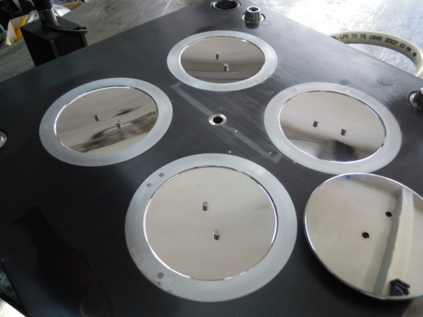
Þekil 2 Dört Gözlü Bir Kalýp
2.4.1.2. Erkek Kalýp
Kalýbýn erkek kýsmý, kalýbýn iç kýsmýný oluþturur. Bu þekilde kalýp boþluðunun oluþmasýný da saðlar. Erkek kalýba hareketli plaka da denilmektedir. Erimiþ polimerin soðumasý sýrasýnda, çekme karakteristiðinden dolayý soðuyan baský, kalýbýn erkek kýsmý üzerine çekilir, kalýbýn diþi kýsmýndan ayrýlýr. Bu çekme karakteristikleri kalýbýn içinden parçanýn atýlmasý için iticilerin, erkek kýsýmda yerleþtirilmesine sebep olur. Ýtici sistemi makinenin hareketli plakasýnýn arkasýna yerleþtirildiði için genellikle kalýbýn erkek kýsmý makinenin hareketli plakasýnýn olduðu tarafa monte edilir.
2.4.1.3. Diþi Kalýp
Baskýnýn dýþ yüzeyini bilirler. Erkek kýsmý gibi, tek plaka üzerine yerleþtirilir. Yerleþtirildiði plakaya da kalýbýn diþi plakasý (sabit plakasý) denir. Kalýbýn diþi plakasý, genellikle makinenin hareketsiz plakasý üzerine monte edilir. Kalýp besleme sistemi (yolluk sistemi) genellikle kalýbýn diþi kýsmýnýn üzerine yerleþtirilir. Çünkü makinenin enjeksiyon ünitesi bu taraftadýr. Kalýp tasarýmcýlarý itici sistemini erkek kalýba, besleme sistemini de diþi kalýp tarafýna koyarlar.
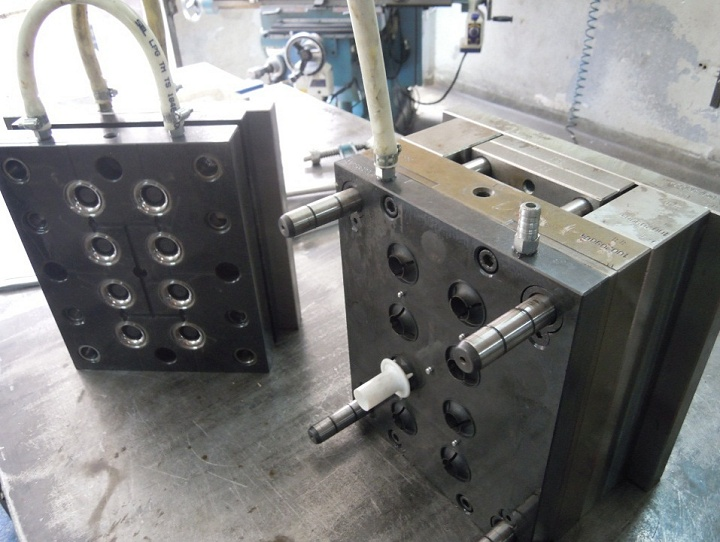
Þekil 3 Diþi Kalýp (solda) ve Erkek Kalýp (saðda)
2.4.1.4. Yolluk sistemi
Ergimiþ plastiðin basýnç yardýmýyla kalýp boþluðuna dolmasý için gereken yollar sistemidir. Ana yol ve baðlantý yollarýndan oluþur. Göz adedi sayýsýna ve yerleþimine göre çeþitli þekillerde olabilir.
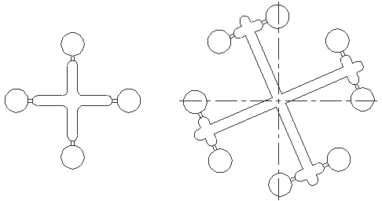
Þekil-4 4 ve 8 Gözlü Standart Yolluk
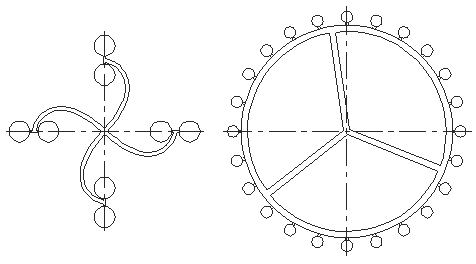
Þekil-5 8 Gözlü Kavisli Yolluk ve 24 Gözlü Dairesel Yolluk
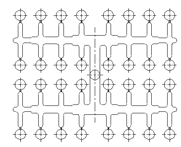
Þekil-6 32 Gözlü Az Gramajlý Standart Yolluk
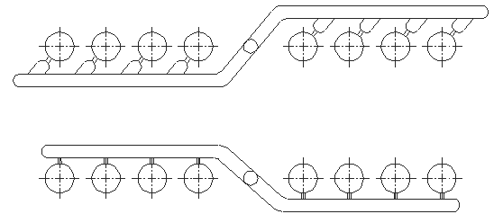
Þekil-7 Sýra Tipi Düz Yolluk
|
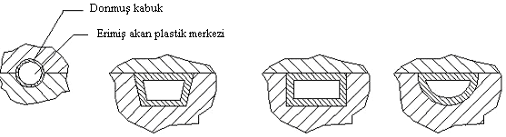
Þekil 8 Yolluk Kesitleri
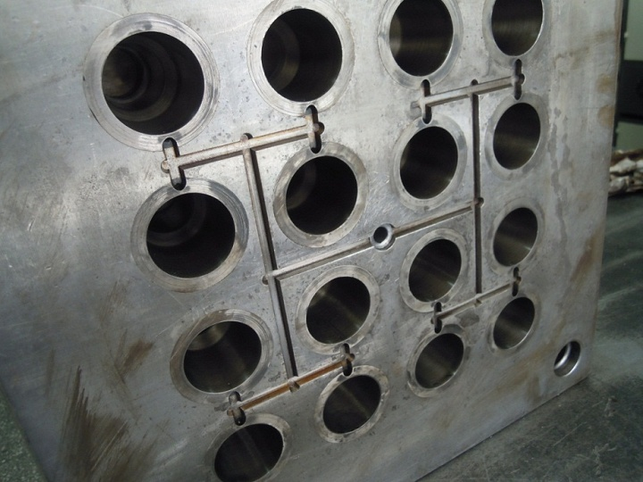
Þekil-9 16 Gözlü Bir Kalýpta Yolluk Sistemi
2.4.1.5. Soðutma Sistemi
Kalýp boþluðuna dolan plastiðin soðutulmasýný saðlayan sistemdir. Soðutma sistemi parçanýn kalitesini doðrudan etkiler dengeli ve tam soðutulmayan parçalar tam sertleþmediði için kalýptan ayrýldýktan sonra çarpýlmaya maruz kalabilir. Ayrýca kalýbýn çalýþmasý sýrasýnda kalýp ergimiþ plastiðin sýcaklýðýyla bir süre sonra ýsýnmaya baslar. Kalýbýn ýsýnmasý kalýbýn çalýþma performansýný, çevrim süresini ve parça kalitesini etkiler. Seri üretimde ayný kalitede ürün elde edebilmek için ayný kalýpta sabit deðerlerle (sabit kalýp sýcaklýðý, sabit eriyik sýcaklýðý, basýnç, hýz) çalýþýlmasý gerekmektedir. Bunun için kalýbýn sürekli sabit sýcaklýkta kalabilmesi için kalýp çekirdeði ve kasasý soðutma sistemi ile soðutulmasý gerekmektedir. Ayrýca kalýbýn dolma esnasýnda en sýcak erimiþ plastik, kalýp giriþinde ve en soðuk erimiþ plastik, yolluk giriþinden en uzak noktadadýr. Soðutma suyunun sýcaklýðý, bu kanallardan geçtikçe artar, bundan dolayý baskýda eþit soðuma saðlamak için, kalýbýn sýcak bölgelerine soðuk sývý, parçanýn soðuk bölgelerine sýcak sývý giriþi saðlamak gerekir.
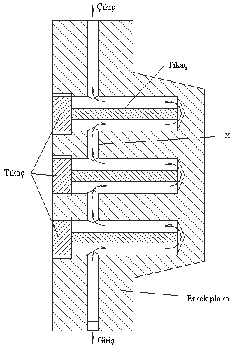
Þekil-10 Erkek kalýbýn soðutulmasý
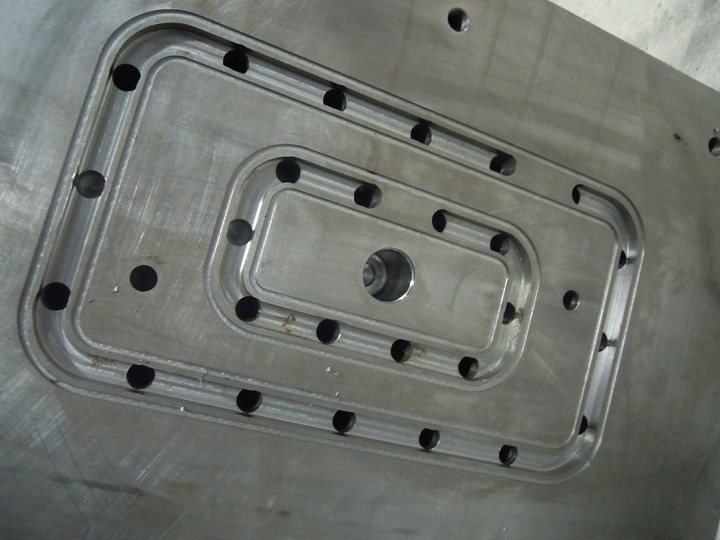
Þekil-10 Erkek kalýbýn soðutulmasý |
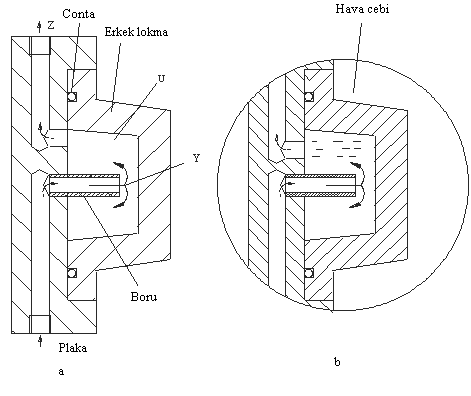
Þekil 11 Erkek Lokmanýn Soðutulmasý
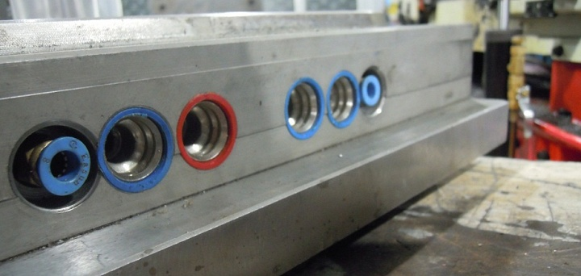
Þekil-12 Soðutma Sistemi Su Baðlantýlarý (Soðuk – Sýcak )
2.4.1.6. Ýtici sistemi
Kalýp boþluðunu dolduran plastiðin kalýp içinde soðuduktan sonra kalýptan ayrýlabilmesi için iticiler ve bu iticileri harekete geçiren itici bloklarý kullanýlmaktadýr. Bu itici bloðunu da harekete geçiren enjeksiyon makinesindeki itici barlarýdýr (pimleridir). Bu itici barlarý kalýbýn en dýþ plakasýna açýlan pim deliklerinden geçerek itici bloðuna temasý ile plakanýn ve dolayýsý ile iticilerin hareketini saðlar. Kalýptaki itici bloðunun dengeli olmasý gerekmektedir. Parçalarýn kalýptan düzgün biçimde çýkmasý için bu þarttýr. Sadece itici bloðunun dengeli olmasý yeterli deðildir, itici bloðuna baðlý iticilerin boylarýnýn da eþit olmasý gerekmektedir.
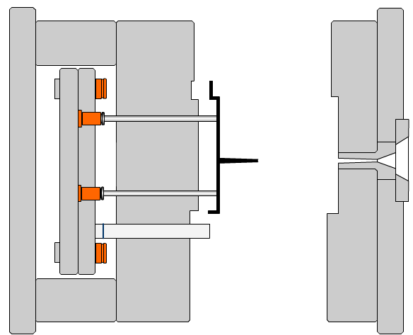
Þekil 13 Ýtici Sisteminin Görünümü |
2.4.2.1 Diþi plaka
Diþi kalýp genellikle kalýplanan parçanýn dýþ , kozmetik kýsmýný çýkaran temel kalýp elemanýdýr. Diþi çekirdeklerin olduðu tarafa diþi kalýp denir. Diþi çekirdekler genellikle ön ýsýl iþlem görmüþ çeliklere iþlenir. Kalýplanan ürünün özelliðine göre diþi çekirdekte kullanýlacak uygun çelik seçilir. Genellikle kalýplanan plastik ürünlerin kozmetik tarafý diþi kýsmý oluþturur. Bu sebeple kalýbýn diþi çekirdekleri daha fazla tesviye iþçiliði gerektirir.
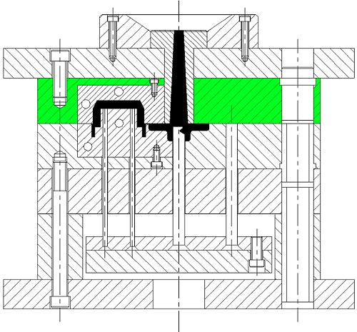
Þekil 14 Diþi Plaka
2.4.2.2 Erkek Plaka
Kalýbýn erkek kýsmý, kalýbýn iç kýsmýný oluþturur. Bu þekilde kalýp boþluðunun oluþmasýný da saðlar. Kalýp erkek kýsmýnýn bulunduðu kalýp yarýmýna, erkek plaka veya kalýbýn erkek kýsmý denir. Erimiþ polimerin soðumasý esnasýnda, çekme karakteristiðinden dolayý soðuyan baský, kalýbýn erkek kýsmý üzerine çekilir, kalýbýn diþi kýsmýndan ayrýlýr. Bu çekme karakteristikleri kalýbýn içinden parçanýn atýlmasý için iticilerin, bu kýsýmda yerleþtirilmesine sebep olur. Ýtici sistemi makinenin hareketli plakasýnýn arkasýna yerleþtirildiði için genellikle kalýbýn erkek kýsmý makinenin hareketli plakasýnýn olduðu tarafa takýlýr.
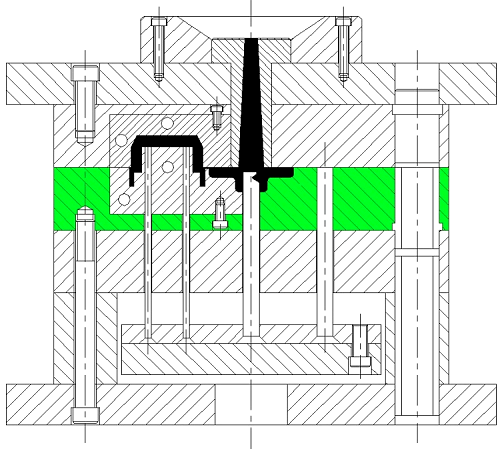
Þekil 15 Erkek Plaka
2.4.2.3 Diþi ve erkek lokmalar
Kalýp boþluðu, kalýbýn içinde erimiþ plastiðin gönderildiði ve soðutulduðu kýsýmdýr. Kalýp bir boþluk ihtiva ettiðinde buna tek gözlü, birden fazla boþluk ihtiva ettiðinde çok gözlü denir. Kalýp boyutu genellikle içindeki boþluk sayýsý ile ifade edilir. Kalýp boþluðu, kalýbýn kapanmasý esnasýnda kalýbýn erkek ve diþi kýsmýnýn oluþturduðu boþluktur
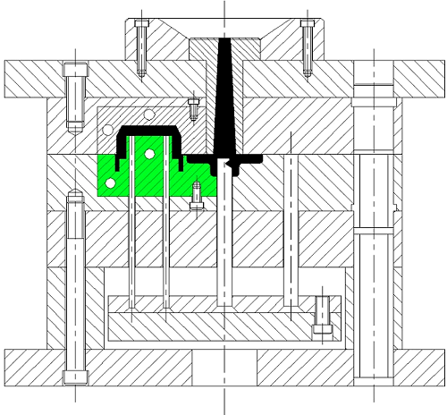
Þekil 16 Erkek Lokma
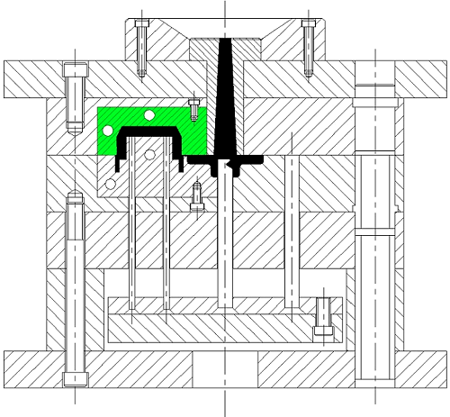
Þekil 17 Diþi Lokma
2.4.2.4 Destek Plakasý
Erkek plakaya desteklik görevi görür. Enjeksiyon kalýplarý yüksek basýnç altýnda çalýþtýklarý için zamanla sehim verebilirler. Bu olumsuzluðu azaltmak veya ortadan kaldýrmak için destek plaka kullanýlýr
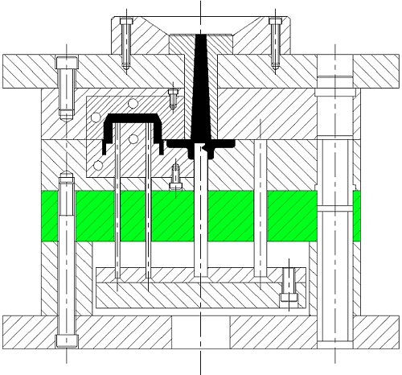
Þekil 18 Destek Plakasý
Ýtici pimleri üzerinde taþýyan plakadýr. Enjeksiyon makinesinden aldýðý hareketi itici pimlere aktarýr. Ýtici pimleri bir bütün olarak dengeli olarak ileri hareket ettirir.
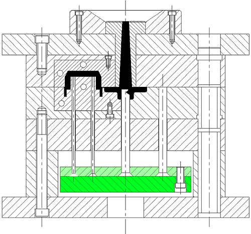
Þekil 19 Ýtici Plakasý
Parçanýn kalýptan iterek ayrýlmasýný saðlayan çubuklardýr. Bu çeþit parçalar kalýbýn erkek kýsmý üzerinde sürekli sürtünmeden dolayý eskir. Modern kalýp parçalan üzerinde olan bu iticiler ve itici býçaklarý, standart parça olarak kullanýlýr. Standardizasyon, kalýp bakým ve imalatýný ucuzlatýr.
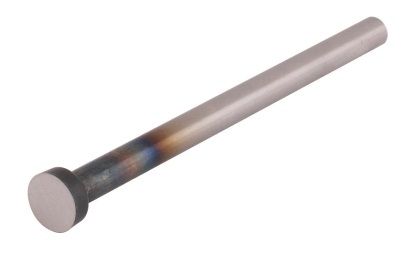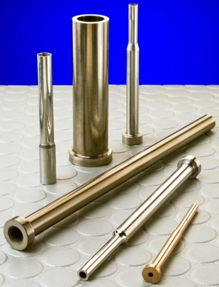
Þekil 20 Çeþitli Ýtici Pimler |
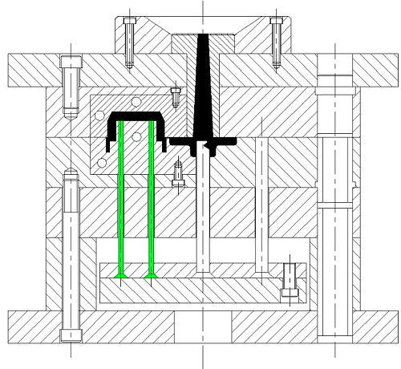
Þekil 21 Ýtici Pimlerin Kalýpta Yerleþimi
2.4.2.7.1 Yolluk Çekme Pimi
Yolluðun açýk olan alt kýsmýna doðrudan doðruya yerleþtirilmiþtir. Ýtici sistem ürünü kalýptan ayýrdýktan sonra yolluktaki malzemenin burçtan dýþarý çekilmesinde kullanýlýr.
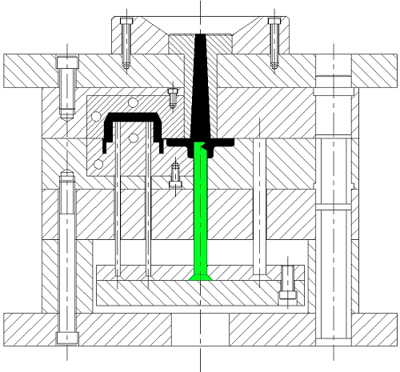
Þekil 22 Yolluk Çekme Pimi
2.4.2.7.2 Geri Ýtme Pimi
Kalýp kapanmasý esnasýnda, itici plakalarýn geri gel meþini saðlar. Destek pimleri ilave olarak itici plaka sistemine kýlavuzluk yapar. Ýtme mesafesi, bu iki parçanýn yüksekliði ile belirlenir. Ýtici baðlama plakasýna yerleþtirilmiþtir. Ýtici baðlama ve itici plakalarýný hareket ettirir.
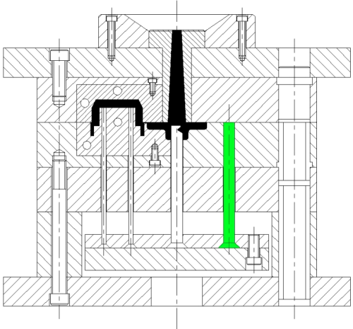
Þekil 23 Geri Ýtici Pim
|